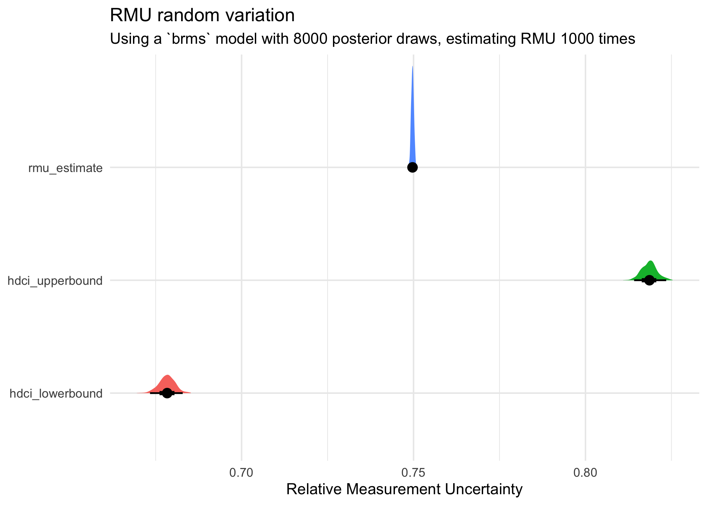
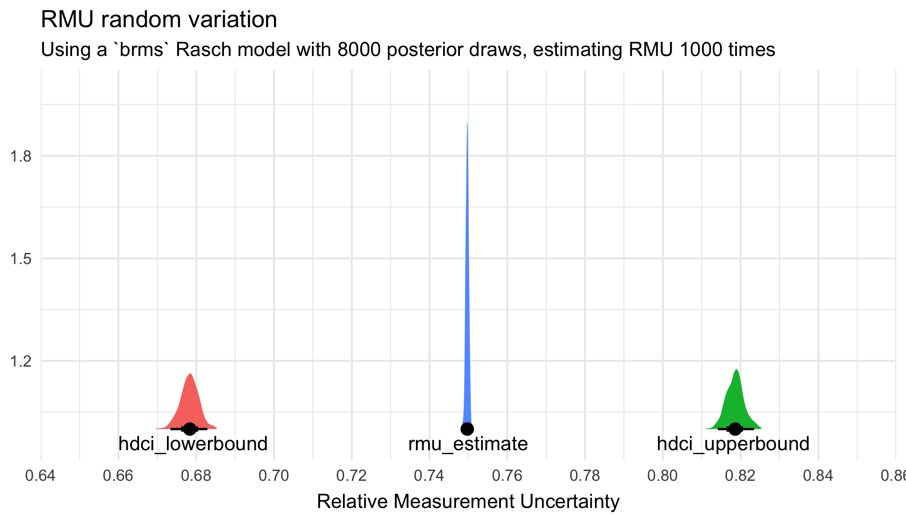

RMU — relative measurement uncertainty
Comparing methods and metrics
![]()
1 Introduction
This post has two purposes. The primary one is to compare some reliability metrics, since a new preprint (Bignardi, Kievit, and Bürkner 2025) inspired some ideas. They propose a general “relative measurement uncertainty” (RMU) metric, applicable in many situations thanks to Bayesian modeling and posterior MCMC draws. My idea that is evaluated here is to use “plausible values” (Mislevy 1991; Wu 2005) instead of fully Bayesian model posterior draws to estimate the RMU. This would make the RMU metric more accessible to users unfamiliar with Bayesian statistics, and easily applicable for existing Rasch measurement software in R, such as my package easyRasch. Please read the preprint by Bignardi and colleagues to learn how the RMU is estimated. A summary is available on pages 12-13.
The secondary purpose is to show how to fit Rasch models, dichotomous and partial credit models (PCM), using Bayesian models with brms, and make some comparisons of person and item parameters relative CML/WLE estimation. There is already an excellent paper on Bayesian Item Response Modeling (Bürkner 2021), but I thought a blog post like this might still be a useful addition to learning materials available. And also an opportunity for myself to learn. This will be added to the post when I have time to work on it.
2 Method
We won’t check model fit in this initial part, as we focus on how the reliability metrics compare and how to specify Rasch models using brms. Weakly informative priors are used for item parameters, borrowing from Bürkner (2021). We use four parallel chains with four CPU cores, each with 2000 draws of which half are warmup, resulting in 4000 post-warmup draws from the posterior distribution. In the dichotomous example, we also fit the same model with 8000 draws (code not shown below).
I will at some point add descriptions of the comparison metrics used, and how the mirt and TAM packages generate plausible values. For now, I hope this will be of use as it is.
3 Rasch dichotomous model
For this example, the eRm::raschdat1 dataset is used, selecting the first 20 items. The dataset has 100 respondents.
3.1 Bayesian model
We need the dataset in long form for brms.
Code
df <- eRm::raschdat1[,1:20] %>%
rownames_to_column("id") %>%
pivot_longer(!id, names_to = "item", values_to = "response")
rasch_prior <- prior("normal(0, 3)", class = "sd", group = "id") +
prior("normal(0, 3)", class = "sd", group = "item")
brms_rasch <- brm(
response ~ 0 + (1 | item) + (1 | id),
data = df,
prior = rasch_prior,
chains = 4,
cores = 4,
iter = 2000,
family = "bernoulli"
)
qs_save(brms_rasch, file = "brms_rasch4000.qs2",compress_level = 11)
qs_save(brms_rasch2, file = "brms_rasch8000.qs2",compress_level = 13)Code
brms_rasch8000 <- qs_read("brms_rasch8000.qs2")
brms_rasch4000 <- qs_read("brms_rasch4000.qs2")
# summary(brms_rasch)
# loo(brms_rasch)
posterior_draws_rm4000 = brms_rasch4000 %>%
as_draws_df() %>%
select(starts_with("r_id")) %>%
t()
posterior_draws_rm8000 = brms_rasch8000 %>%
as_draws_df() %>%
select(starts_with("r_id")) %>%
t()4000 draws:
Code
RMUreliability(posterior_draws_rm4000) rmu_estimate hdci_lowerbound hdci_upperbound .width .point .interval
1 0.7500278 0.6771337 0.8131132 0.95 mean hdci8000 draws:
Code
RMUreliability(posterior_draws_rm8000) rmu_estimate hdci_lowerbound hdci_upperbound .width .point .interval
1 0.7524065 0.6819247 0.8210144 0.95 mean hdci3.2 Plausible values
As seen in the code below, I did some simple timing tests to compare the performance of TAM and mirt packages, where the latter has options in how to estimate thetas (latent scores) used for generating the plausible values (not available in TAM). Since WLE is generally considered to have the lowest bias (Kreiner 2025), this is the default choice in the RIreliability() function, dubbed WLE-RMU.
Code
# defining a separate function for RIreliability to use in this post, in case I make changes later on in the easyRasch package
RIreliability3 <- function(data, conf_int = .95, draws = 1000, estim = "WLE", boot = FALSE, cpu = 4, pv = "mirt") {
message("Note that PSI is calculated with max/min scoring individuals excluded.")
if(min(as.matrix(data), na.rm = T) > 0) {
stop("The lowest response category needs to coded as 0. Please recode your data.")
} else if(max(as.matrix(data), na.rm = T) == 1) {
model <- "RM"
} else if(max(as.matrix(data), na.rm = T) > 1) {
model <- "PCM"
}
if (model == "PCM") {
mirt_out <- mirt(
data,
model = 1,
itemtype = "Rasch",
verbose = FALSE,
accelerate = "squarem"
)
erm_out <- eRm::PCM(data)
} else if (model == "RM") {
mirt_out <- mirt(
data,
model = 1,
itemtype = "1PL",
verbose = FALSE,
accelerate = "squarem"
)
erm_out <- eRm::RM(data)
}
wle <- RI_iarm_person_estimates(erm_out, properties = TRUE)[[2]] %>%
as.data.frame()
rownames(wle) <- NULL
empirical_rel <- mirt::fscores(mirt_out,
method = estim,
theta_lim = c(-10, 10),
full.scores.SE = TRUE,
verbose = FALSE) %>%
mirt::empirical_rxx()
if (boot == TRUE) {
require(doParallel)
registerDoParallel(cores = cpu)
# bootstrap CI for empirical
fit <- data.frame()
fit <- foreach(i = 1:draws, .combine = rbind) %dopar% {
dat <- data[sample(1:nrow(data), nrow(data), replace = TRUE), ]
if (model == "PCM") {
mirt_out2 <- mirt(
dat,
model = 1,
itemtype = "Rasch",
verbose = FALSE,
accelerate = "squarem"
)
} else if (model == "RM") {
mirt_out2 <- mirt(
dat,
model = 1,
itemtype = "1PL",
verbose = FALSE,
accelerate = "squarem"
)
}
mirt::fscores(mirt_out2,
method = estim,
theta_lim = c(-10, 10),
full.scores.SE = TRUE,
verbose = FALSE) %>%
mirt::empirical_rxx()
}
emp_boot <- mean_hdci(fit) %>%
mutate(across(where(is.numeric), ~ round(.x, 3)))
}
if (pv == "mirt") {
plvals <- mirt::fscores(mirt_out, method = estim,
theta_lim = c(-10, 10),
plausible.draws = draws,
plausible.type = "MH",
verbose = FALSE)
rmu <- do.call(cbind.data.frame, plvals) %>%
RMUreliability(level = conf_int) %>%
mutate(across(where(is.numeric), ~ round(.x, 3)))
} else if (pv == "TAM") {
estim = "EAP"
if (model == "PCM") {
tam_out <- TAM::tam.mml(resp = data, irtmodel = "PCM", verbose = FALSE)
} else if (model == "RM") {
tam_out <- TAM::tam.mml(resp = data, irtmodel = "1PL", verbose = FALSE)
}
plvals <- TAM::tam.pv(tam_out, nplausible = draws, verbose = FALSE)[["pv"]][,-1]
rmu <- RMUreliability(plvals, level = conf_int) %>%
mutate(across(where(is.numeric), ~ round(.x, 3)))
}
message(paste0("RMU reliability estimates based on ",draws," posterior draws (plausible values) from ",nrow(data)," respondents.",
"\nSee Bignardi, Kievit, & Bürkner (2025). 'A general method for estimating reliability using Bayesian Measurement Uncertainty' for details. ",
"The procedure has been modified in `easyRasch` to use plausible values based on an MML estimated Rasch model."))
if (boot == TRUE) {
return(list(WLE = wle,
PSI = eRm::person.parameter(erm_out) %>% eRm::SepRel(),
Empirical = paste0(estim,"_empirical = ",round(empirical_rel,3)),
Empirical_bootstrap = paste0(estim,"_empirical = ",emp_boot$y," (95% HDCI [",emp_boot$ymin,", ",emp_boot$ymax,"]) (",draws," bootstrap resamples)"),
RMU = paste0(estim,"-RMU = ",rmu$rmu_estimate," (95% HDCI [",rmu$hdci_lowerbound,", ",rmu$hdci_upperbound,"]) (",draws," draws) using package ",pv)
)
)
} else {
return(list(WLE = wle,
PSI = eRm::person.parameter(erm_out) %>% eRm::SepRel(),
Empirical = paste0(estim,"_empirical = ",round(empirical_rel,3)),
RMU = paste0(estim,"-RMU = ",rmu$rmu_estimate," (95% HDCI [",rmu$hdci_lowerbound,", ",rmu$hdci_upperbound,"]) (",draws," draws) using package ",pv)
)
)
}
}Code
t0 <- Sys.time()
rmu_mirt_wle4000 <- RIreliability3(eRm::raschdat1[,1:20], draws = 4000)
t1 <- Sys.time()
t1 - t0 # 4.5s
t0 <- Sys.time()
rmu_mirt_eap4000 <- RIreliability3(eRm::raschdat1[,1:20], draws = 4000, estim = "EAP")
t1 <- Sys.time()
t1 - t0 # 4.1s
t0 <- Sys.time()
rmu_tam_eap4000 <- RIreliability3(eRm::raschdat1[,1:20], draws = 4000, pv = "TAM")
t1 <- Sys.time()
t1 - t0 # 13.9sUsing mirt, there is not much difference between WLE and EAP, approximately 4.1s for EAP and 4.5s for WLE. TAM takes quite a bit longer, at around 14s. I only did two iterations, so take this with a grain of salt.
Code
t0 <- Sys.time()
rmu_mirt_wle8000 <- RIreliability3(eRm::raschdat1[,1:20], draws = 8000)
t1 <- Sys.time()
t1 - t0 # 8.1
t0 <- Sys.time()
rmu_mirt_eap8000 <- RIreliability3(eRm::raschdat1[,1:20], draws = 8000, estim = "EAP")
t1 <- Sys.time()
t1 - t0 # 8.1
t0 <- Sys.time()
rmu_tam_eap8000 <- RIreliability3(eRm::raschdat1[,1:20], draws = 8000, pv = "TAM")
t1 <- Sys.time()
t1 - t0 # 31sWith 8000 draws, WLE and EAP with mirt are both at 8.1s, while TAM takes about 31s.
3.3 Conditional reliability
This function and its code is borrowed from a recent paper by McNeish and Dumas (2025). Alpha and omega are reported with 95% confidence intervals.
3.4 Summarizing RMU findings
Since RMU uses a random pairing of posterior draws, there is variation in both point values and HDCI estimates if one runs the RMU estimation repeatedly using the same set of draws. Let’s investigate how much it varies, using the brms model with 4000 draws.
Code
rel <- map_dfr(1:1000, ~ RMUreliability(posterior_draws_rm4000)[1:3])
qs_save(rel,"rel4000.qs2")Code
rel <- qs_read("rel4000.qs2")
rel_text <- rel %>%
pivot_longer(everything()) %>%
group_by(name) %>%
summarise(text_location = mean(value))
rel %>%
pivot_longer(everything()) %>%
ggplot(aes(x = value, y = 1, fill = name)) +
stat_slabinterval() +
geom_text(data = rel_text,
aes(label = name, x = text_location),
position = position_nudge(y = -0.04)) +
labs(title = "RMU random variation",
subtitle = "Using a `brms` Rasch model with 4000 posterior draws, estimating RMU 1000 times",
x = "Relative Measurement Uncertainty",
y = NULL) +
theme_minimal() +
theme(legend.position = "none",
axis.title.x = element_text(vjust = -0.1)) +
scale_x_continuous(limits = c(0.65,0.85), breaks = scales::breaks_pretty(8))
CI’s have more variation than the point estimate.
Code
rel %>%
pivot_longer(everything()) %>%
group_by(name) %>%
reframe(min = min(value),
max = max(value),
mean_hdci = mean_hdci(value))# A tibble: 3 × 4
name min max mean_hdci$y $ymin $ymax $.width $.point $.interval
<chr> <dbl> <dbl> <dbl> <dbl> <dbl> <dbl> <chr> <chr>
1 hdci_lowerbound 0.664 0.688 0.679 0.673 0.686 0.95 mean hdci
2 hdci_upperbound 0.809 0.830 0.818 0.812 0.825 0.95 mean hdci
3 rmu_estimate 0.748 0.752 0.750 0.749 0.751 0.95 mean hdci Let’s do the same with 8000 draws.
Code
rel8 <- map_dfr(1:1000, ~ RMUreliability(posterior_draws_rm8000)[1:3])
qs_save(rel8,"rel8000.qs2")Code
rel8 <- qs_read("rel8000.qs2")
rel8_text <- rel8 %>%
pivot_longer(everything()) %>%
group_by(name) %>%
summarise(text_location = mean(value))
rel8 %>%
pivot_longer(everything()) %>%
ggplot(aes(x = value, y = 1, fill = name)) +
stat_slabinterval() +
geom_text(data = rel_text,
aes(label = name, x = text_location),
position = position_nudge(y = -0.04)) +
labs(title = "RMU random variation",
subtitle = "Using a `brms` Rasch model with 8000 posterior draws, estimating RMU 1000 times",
x = "Relative Measurement Uncertainty",
y = NULL) +
theme_minimal() +
theme(legend.position = "none",
axis.title.x = element_text(vjust = -0.1)) +
scale_x_continuous(limits = c(0.65,0.85), breaks = scales::breaks_pretty(8))
Code
rel8 %>%
pivot_longer(everything()) %>%
group_by(name) %>%
reframe(min = min(value),
max = max(value),
mean_hdci = mean_hdci(value))# A tibble: 3 × 4
name min max mean_hdci$y $ymin $ymax $.width $.point $.interval
<chr> <dbl> <dbl> <dbl> <dbl> <dbl> <dbl> <chr> <chr>
1 hdci_lowerbound 0.670 0.685 0.678 0.673 0.683 0.95 mean hdci
2 hdci_upperbound 0.811 0.825 0.819 0.814 0.823 0.95 mean hdci
3 rmu_estimate 0.748 0.751 0.750 0.749 0.750 0.95 mean hdci Less variation - more precision in estimates with 8000 draws compared to 4000 draws.
How about just estimating RMU 50 times, does it converge on the same mean values for point and CI estimates, compared to estimating RMU 1000 times? This is obviously not a thorough test, it should be evaluated more properly at some point.
Code
t0 <- Sys.time()
rel50 <- map_dfr(1:50, ~ RMUreliability(posterior_draws_rm4000)[1:3])
t1 <- Sys.time()
t1 - t0 # ~3.4sTime difference of 3.317572 secsCode
rel50 %>%
pivot_longer(everything()) %>%
group_by(name) %>%
reframe(mean_hdci = mean_hdci(value))# A tibble: 3 × 2
name mean_hdci$y $ymin $ymax $.width $.point $.interval
<chr> <dbl> <dbl> <dbl> <dbl> <chr> <chr>
1 hdci_lowerbound 0.679 0.674 0.684 0.95 mean hdci
2 hdci_upperbound 0.818 0.814 0.824 0.95 mean hdci
3 rmu_estimate 0.750 0.749 0.751 0.95 mean hdci Clearly seems more stable than just estimating RMU once.
This finding leads me to incorporate the 50x RMU estimation as a default setting in the RIreliability() function in the next version update. Results reported below are based on this method.
Code
RIreliability50 <- function(data, conf_int = .95, draws = 1000, estim = "WLE", boot = FALSE, cpu = 4, pv = "mirt", iter = 50, verbose = TRUE) {
if (verbose == TRUE) {
message("Note that PSI is calculated with max/min scoring individuals excluded.")
message(paste0("RMU reliability estimates based on ",draws," posterior draws (plausible values) from ",nrow(data)," respondents.",
"\nSee Bignardi, Kievit, & Bürkner (2025). 'A general method for estimating reliability using Bayesian Measurement Uncertainty' for details. ",
"The procedure has been modified in `easyRasch` to use plausible values based on an MML estimated Rasch model."))
}
if(min(as.matrix(data), na.rm = T) > 0) {
stop("The lowest response category needs to coded as 0. Please recode your data.")
} else if(max(as.matrix(data), na.rm = T) == 1) {
model <- "RM"
} else if(max(as.matrix(data), na.rm = T) > 1) {
model <- "PCM"
}
if (model == "PCM") {
mirt_out <- mirt(
data,
model = 1,
itemtype = "Rasch",
verbose = FALSE,
accelerate = "squarem"
)
erm_out <- eRm::PCM(data)
} else if (model == "RM") {
mirt_out <- mirt(
data,
model = 1,
itemtype = "1PL",
verbose = FALSE,
accelerate = "squarem"
)
erm_out <- eRm::RM(data)
}
wle <- RI_iarm_person_estimates(erm_out, properties = TRUE)[[2]] %>%
as.data.frame()
rownames(wle) <- NULL
empirical_rel <- mirt::fscores(mirt_out,
method = estim,
theta_lim = c(-10, 10),
full.scores.SE = TRUE,
verbose = FALSE) %>%
mirt::empirical_rxx()
if (boot == TRUE) {
require(doParallel)
registerDoParallel(cores = cpu)
# bootstrap CI for empirical
fit <- data.frame()
fit <- foreach(i = 1:draws, .combine = rbind) %dopar% {
dat <- data[sample(1:nrow(data), nrow(data), replace = TRUE), ]
if (model == "PCM") {
mirt_out2 <- mirt(
dat,
model = 1,
itemtype = "Rasch",
verbose = FALSE,
accelerate = "squarem"
)
} else if (model == "RM") {
mirt_out2 <- mirt(
dat,
model = 1,
itemtype = "1PL",
verbose = FALSE,
accelerate = "squarem"
)
}
mirt::fscores(mirt_out2,
method = estim,
theta_lim = c(-10, 10),
full.scores.SE = TRUE,
verbose = FALSE) %>%
mirt::empirical_rxx()
}
emp_boot <- mean_hdci(fit) %>%
mutate(across(where(is.numeric), ~ round(.x, 3)))
}
if (pv == "mirt") {
plvals <- mirt::fscores(mirt_out, method = estim,
theta_lim = c(-10, 10),
plausible.draws = draws,
plausible.type = "MH",
verbose = FALSE)
rmu_draws <- do.call(cbind.data.frame, plvals)
rmu_iter <- map_dfr(1:iter, ~ RMUreliability(rmu_draws, level = conf_int)[1:3])
rmu <- rmu_iter %>%
summarise(rmu_estimate = mean(rmu_estimate),
hdci_lowerbound = mean(hdci_lowerbound),
hdci_upperbound = mean(hdci_upperbound)
) %>%
mutate(across(where(is.numeric), ~ round(.x, 3)))
} else if (pv == "TAM") {
estim = "EAP"
if (model == "PCM") {
tam_out <- TAM::tam.mml(resp = data, irtmodel = "PCM", verbose = FALSE)
} else if (model == "RM") {
tam_out <- TAM::tam.mml(resp = data, irtmodel = "1PL", verbose = FALSE)
}
plvals <- TAM::tam.pv(tam_out, nplausible = draws, verbose = FALSE)[["pv"]][,-1]
rmu_iter <- map_dfr(1:iter, ~ RMUreliability(plvals, level = conf_int)[1:3])
rmu <- rmu_iter %>%
summarise(rmu_estimate = mean(rmu_estimate),
hdci_lowerbound = mean(hdci_lowerbound),
hdci_upperbound = mean(hdci_upperbound)
) %>%
mutate(across(where(is.numeric), ~ round(.x, 3)))
}
if (boot == TRUE) {
return(list(WLE = wle,
PSI = eRm::person.parameter(erm_out) %>% eRm::SepRel(),
Empirical = paste0(estim,"_empirical = ",round(empirical_rel,3)),
Empirical_bootstrap = paste0(estim,"_empirical = ",emp_boot$y," (95% HDCI [",emp_boot$ymin,", ",emp_boot$ymax,"]) (",draws," bootstrap resamples)"),
RMU = paste0(estim,"-RMU = ",rmu$rmu_estimate," (95% HDCI [",rmu$hdci_lowerbound,", ",rmu$hdci_upperbound,"]) (",draws," draws) using package ",pv," and ",iter," RMU iterations.")
)
)
} else {
return(list(WLE = wle,
PSI = eRm::person.parameter(erm_out) %>% eRm::SepRel(),
Empirical = paste0(estim,"_empirical = ",round(empirical_rel,3)),
RMU = paste0(estim,"-RMU = ",rmu$rmu_estimate," (95% HDCI [",rmu$hdci_lowerbound,", ",rmu$hdci_upperbound,"]) (",draws," draws) using package ",pv," and ",iter," RMU iterations.")
)
)
}
}Using the 50 iteration setting 10 times with 4000 draws. What is the variation!?
Code
iter50 <- map_vec(1:10, ~ RIreliability50(raschdat1[,1:20], draws = 4000, verbose = FALSE)$RMU)
iter50Point estimate varies from .761 to .764, with lower/upper CI ranging from .694 to .698 and .825 to .827. Estimates seem unlikely to vary more than 0.01, which I find acceptable.
3.5 Summary table
Code
rmu_mirt_wle_full <- RIreliability50(eRm::raschdat1[,1:20], draws = 4000, verbose = F)
rmu_mirt_eap_full <- RIreliability50(eRm::raschdat1[,1:20], draws = 4000, estim = "EAP", verbose = F)
t0 <- Sys.time()
rmu_mirt_wle4000 <- RIreliability50(eRm::raschdat1[,1:20], draws = 4000, verbose = F)$RMU
t1 <- Sys.time()
t1 - t0 # 8.3s
t0 <- Sys.time()
rmu_mirt_eap4000 <- RIreliability50(eRm::raschdat1[,1:20], draws = 4000, estim = "EAP", verbose = F)$RMU
t1 <- Sys.time()
t1 - t0 # 7.7s
t0 <- Sys.time()
rmu_tam_eap4000 <- RIreliability50(eRm::raschdat1[,1:20], draws = 4000, pv = "TAM", verbose = F)$RMU
t1 <- Sys.time()
t1 - t0 # 10.6s
brms4000 <- map_dfr(1:50, ~ RMUreliability(posterior_draws_rm4000)[1:3]) %>%
summarise(rmu_estimate = mean(rmu_estimate),
hdci_lowerbound = mean(hdci_lowerbound),
hdci_upperbound = mean(hdci_upperbound)
) %>%
mutate(across(where(is.numeric), ~ round(.x, 3)))
brms8000 <- map_dfr(1:50, ~ RMUreliability(posterior_draws_rm8000)[1:3]) %>%
summarise(rmu_estimate = mean(rmu_estimate),
hdci_lowerbound = mean(hdci_lowerbound),
hdci_upperbound = mean(hdci_upperbound)
) %>%
mutate(across(where(is.numeric), ~ round(.x, 3)))Code
data.frame(Metric = c("RMU brms 8000","RMU brms 4000","WLE-RMU PV 4000 (mirt)","EAP-RMU PV 4000 (mirt)","EAP-RMU PV 4000 (TAM)","EAP (TAM)","PSI (eRm)","WLE empirical (mirt)","EAP empirical (mirt)","Alpha","Omega"),
Estimate = c("0.750, 95% HDCI [0.678, 0.818]",
"0.750, 95% HDCI [0.679, 0.818]",
"0.762, 95% HDCI [0.696, 0.827]",
"0.762, 95% HDCI [0.695, 0.826]",
"0.740, 95% HDCI [0.669, 0.809]",
"0.749",
"0.747",
"0.792",
"0.761",
"0.75 95% CI [0.68,0.82]",
"0.72 95% CI [0.64,0.80]")
) %>%
knitr::kable()| Metric | Estimate |
|---|---|
| RMU brms 8000 | 0.750, 95% HDCI [0.678, 0.818] |
| RMU brms 4000 | 0.750, 95% HDCI [0.679, 0.818] |
| WLE-RMU PV 4000 (mirt) | 0.762, 95% HDCI [0.696, 0.827] |
| EAP-RMU PV 4000 (mirt) | 0.762, 95% HDCI [0.695, 0.826] |
| EAP-RMU PV 4000 (TAM) | 0.740, 95% HDCI [0.669, 0.809] |
| EAP (TAM) | 0.749 |
| PSI (eRm) | 0.747 |
| WLE empirical (mirt) | 0.792 |
| EAP empirical (mirt) | 0.761 |
| Alpha | 0.75 95% CI [0.68,0.82] |
| Omega | 0.72 95% CI [0.64,0.80] |
4 Partial credit model (PCM)
For this example, the eRm::pcmdat2 dataset is used. It has 4 items with 3 response categories each, and 300 respondents. It might not be an optimal dataset to use since item 3 is a bit overfit to the PCM.
4.1 Bayesian model
To fit a PCM with brms, we need family = "acat", which defaults to use logit link.
Code
df2 <- pcmdat2 %>%
mutate(across(everything(), ~ .x + 1)) %>% # lowest category needs to be 1, unlike most Rasch packages that use 0
rownames_to_column("id") %>%
pivot_longer(!id, names_to = "item", values_to = "response")
get_prior(response | thres(gr = item) ~ 1 + (1 | id),
data = df2,
family = "acat")
prior_pcm <- prior("normal(0, 5)", class = "Intercept") +
prior("normal(0, 3)", class = "sd", group = "id")
brms_pcm <- brm(
response | thres(gr = item) ~ 1 + (1 | id),
data = df2,
prior = prior_pcm,
chains = 4,
cores = 4,
iter = 2000,
family = "acat",
control = list(adapt_delta = 0.99)
)
loo(brms_pcm)
qs_save(brms_pcm, file = "brms_pcm.qs2", compress_level = 11)Code
brms_pcm <- qs_read("brms_pcm.qs2")
posterior_draws_pcm <- brms_pcm %>%
as_draws_df() %>%
select(starts_with("r_id")) %>%
t()4.2 Conditional reliability
4.3 Summary table
Code
brms4000pcm <- map_dfr(1:50, ~ RMUreliability(posterior_draws_pcm)[1:3]) %>%
summarise(rmu_estimate = mean(rmu_estimate),
hdci_lowerbound = mean(hdci_lowerbound),
hdci_upperbound = mean(hdci_upperbound)
) %>%
mutate(across(where(is.numeric), ~ round(.x, 3)))
rmu_mirt_wle_full <- RIreliability50(eRm::pcmdat2, draws = 4000, verbose = F)
rmu_mirt_eap_full <- RIreliability50(eRm::pcmdat2, draws = 4000, estim = "EAP", verbose = F)
rmu_mirt_wle4000 <- RIreliability50(eRm::pcmdat2, draws = 4000, verbose = F)$RMU
rmu_mirt_eap4000 <- RIreliability50(eRm::pcmdat2, draws = 4000, estim = "EAP", verbose = F)$RMU
rmu_tam_eap4000 <- RIreliability50(eRm::pcmdat2, draws = 4000, pv = "TAM", verbose = F)$RMUCode
data.frame(Metric = c("RMU brms 4000","WLE-RMU PV 4000 (mirt)","EAP-RMU PV 4000 (mirt)","EAP-RMU PV 4000 (TAM)","EAP","WLE empirical (mirt)","EAP empirical (mirt)","PSI","Alpha","Omega"),
Estimate = c("0.672, 95% HDCI [0.615, 0.729]",
"0.671, 95% HDCI [0.618, 0.721]",
"0.670, 95% HDCI [0.618, 0.721]",
"0.672, 95% HDCI [0.621, 0.722]",
"0.669",
"0.718",
"0.670",
"0.380",
"0.66 95% CI [0.59,0.72]",
"0.63 95% CI [0.56,0.70]")
) %>%
knitr::kable()| Metric | Estimate |
|---|---|
| RMU brms 4000 | 0.672, 95% HDCI [0.615, 0.729] |
| WLE-RMU PV 4000 (mirt) | 0.671, 95% HDCI [0.618, 0.721] |
| EAP-RMU PV 4000 (mirt) | 0.670, 95% HDCI [0.618, 0.721] |
| EAP-RMU PV 4000 (TAM) | 0.672, 95% HDCI [0.621, 0.722] |
| EAP | 0.669 |
| WLE empirical (mirt) | 0.718 |
| EAP empirical (mirt) | 0.670 |
| PSI | 0.380 |
| Alpha | 0.66 95% CI [0.59,0.72] |
| Omega | 0.63 95% CI [0.56,0.70] |
5 Session info
Code
R version 4.4.3 (2025-02-28)
Platform: aarch64-apple-darwin20
Running under: macOS Sequoia 15.7.1
Matrix products: default
BLAS: /Library/Frameworks/R.framework/Versions/4.4-arm64/Resources/lib/libRblas.0.dylib
LAPACK: /Library/Frameworks/R.framework/Versions/4.4-arm64/Resources/lib/libRlapack.dylib; LAPACK version 3.12.0
locale:
[1] en_US.UTF-8/en_US.UTF-8/en_US.UTF-8/C/en_US.UTF-8/en_US.UTF-8
time zone: Europe/Stockholm
tzcode source: internal
attached base packages:
[1] parallel grid stats4 stats graphics grDevices utils
[8] datasets methods base
other attached packages:
[1] qs2_0.1.5 brms_2.23.0 Rcpp_1.0.14 easyRasch_0.4.1.2
[5] Bayesrel_0.7.8 doParallel_1.0.17 iterators_1.0.14 furrr_0.3.1
[9] future_1.67.0 foreach_1.5.2 janitor_2.2.1 iarm_0.4.3
[13] hexbin_1.28.4 catR_3.17 glue_1.8.0 ggrepel_0.9.6
[17] patchwork_1.3.2 reshape_0.8.10 matrixStats_1.4.1 psychotree_0.16-2
[21] psychotools_0.7-4 partykit_1.2-24 mvtnorm_1.3-3 libcoin_1.0-10
[25] psych_2.5.6 mirt_1.45.1 lattice_0.22-6 eRm_1.0-10
[29] kableExtra_1.4.0 formattable_0.2.1 ggdist_3.3.3 lubridate_1.9.4
[33] forcats_1.0.0 stringr_1.5.2 dplyr_1.1.4 purrr_1.1.0
[37] readr_2.1.5 tidyr_1.3.1 tibble_3.3.0 ggplot2_3.5.2
[41] tidyverse_2.0.0
loaded via a namespace (and not attached):
[1] splines_4.4.3 R.oo_1.26.0 cellranger_1.1.0
[4] rpart_4.1.24 lifecycle_1.0.4 Rdpack_2.6.1
[7] StanHeaders_2.32.10 rprojroot_2.1.1 globals_0.18.0
[10] MASS_7.3-64 backports_1.5.0 magrittr_2.0.3
[13] vcd_1.4-12 Hmisc_5.2-4 rmarkdown_2.29
[16] yaml_2.3.10 pkgbuild_1.4.6 sessioninfo_1.2.3
[19] pbapply_1.7-2 RColorBrewer_1.1-3 multcomp_1.4-26
[22] abind_1.4-5 audio_0.1-11 quadprog_1.5-8
[25] R.utils_2.12.3 TH.data_1.1-2 nnet_7.3-20
[28] tensorA_0.36.2.1 sandwich_3.1-1 inline_0.3.19
[31] listenv_0.9.1 testthat_3.2.1.1 vegan_2.6-8
[34] bridgesampling_1.1-2 parallelly_1.45.1 svglite_2.1.3
[37] permute_0.9-7 codetools_0.2-20 xml2_1.3.6
[40] tidyselect_1.2.1 bayesplot_1.14.0 farver_2.1.2
[43] base64enc_0.1-3 jsonlite_1.8.9 progressr_0.14.0
[46] Formula_1.2-5 survival_3.8-3 emmeans_1.10.4
[49] systemfonts_1.2.3 tools_4.4.3 gnm_1.1-5
[52] mnormt_2.1.1 gridExtra_2.3 xfun_0.46
[55] here_1.0.2 mgcv_1.9-1 distributional_0.4.0
[58] ca_0.71.1 loo_2.8.0 withr_3.0.2
[61] beepr_2.0 fastmap_1.2.0 digest_0.6.37
[64] timechange_0.3.0 R6_2.5.1 estimability_1.5.1
[67] colorspace_2.1-1 R.methodsS3_1.8.2 inum_1.0-5
[70] utf8_1.2.4 generics_0.1.3 data.table_1.17.8
[73] SimDesign_2.21 htmlwidgets_1.6.4 pkgconfig_2.0.3
[76] gtable_0.3.6 lmtest_0.9-40 brio_1.1.5
[79] htmltools_0.5.8.1 lavaan_0.6-20 scales_1.4.0
[82] posterior_1.6.0 snakecase_0.11.1 knitr_1.48
[85] rstudioapi_0.17.1 tzdb_0.4.0 curl_7.0.0
[88] coda_0.19-4.1 checkmate_2.3.2 nlme_3.1-167
[91] zoo_1.8-12 relimp_1.0-5 vcdExtra_0.8-5
[94] foreign_0.8-88 pillar_1.10.1 vctrs_0.6.5
[97] stringfish_0.16.0 xtable_1.8-4 Deriv_4.1.3
[100] cluster_2.1.8 dcurver_0.9.2 GPArotation_2024.3-1
[103] htmlTable_2.4.3 pbivnorm_0.6.0 evaluate_1.0.1
[106] cli_3.6.3 compiler_4.4.3 rlang_1.1.6
[109] rstantools_2.4.0 future.apply_1.20.0 LaplacesDemon_16.1.6
[112] labeling_0.4.3 plyr_1.8.9 rstan_2.32.6
[115] stringi_1.8.7 QuickJSR_1.3.1 viridisLite_0.4.2
[118] V8_4.4.2 Brobdingnag_1.2-9 Matrix_1.7-2
[121] qvcalc_1.0.3 hms_1.1.3 rbibutils_2.2.16
[124] clipr_0.8.0 RcppParallel_5.1.8 readxl_1.4.5 6 References
Reuse
Citation
@online{johansson2025,
author = {Johansson, Magnus},
title = {RMU -\/-\/- Relative Measurement Uncertainty},
date = {2025-10-23},
url = {https://pgmj.github.io/reliability.html},
langid = {en}
}